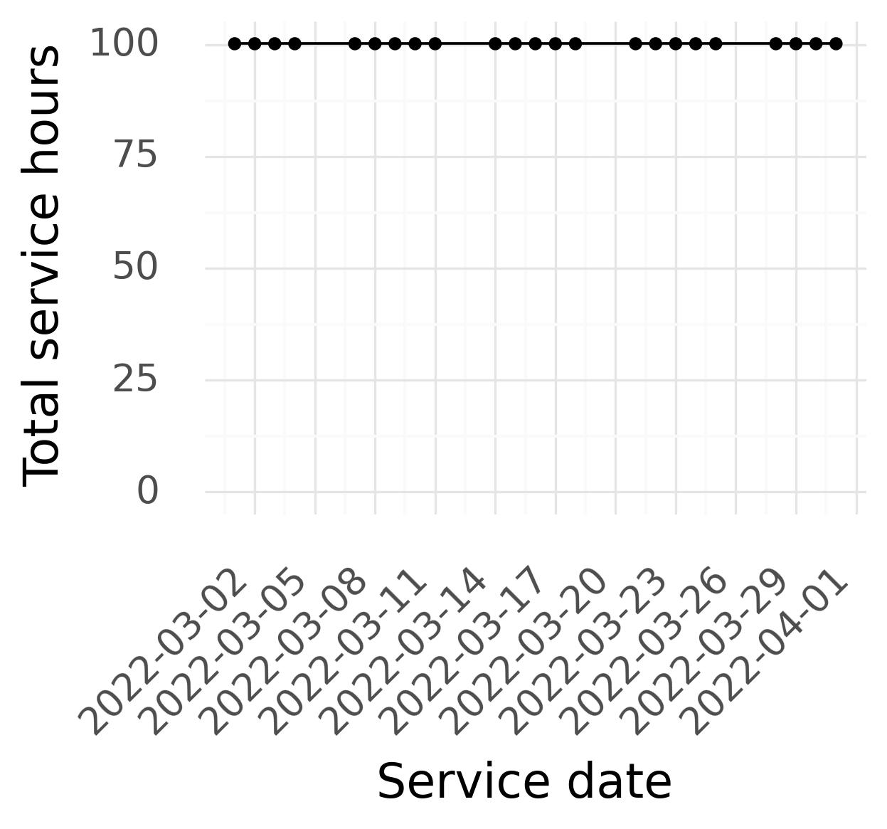
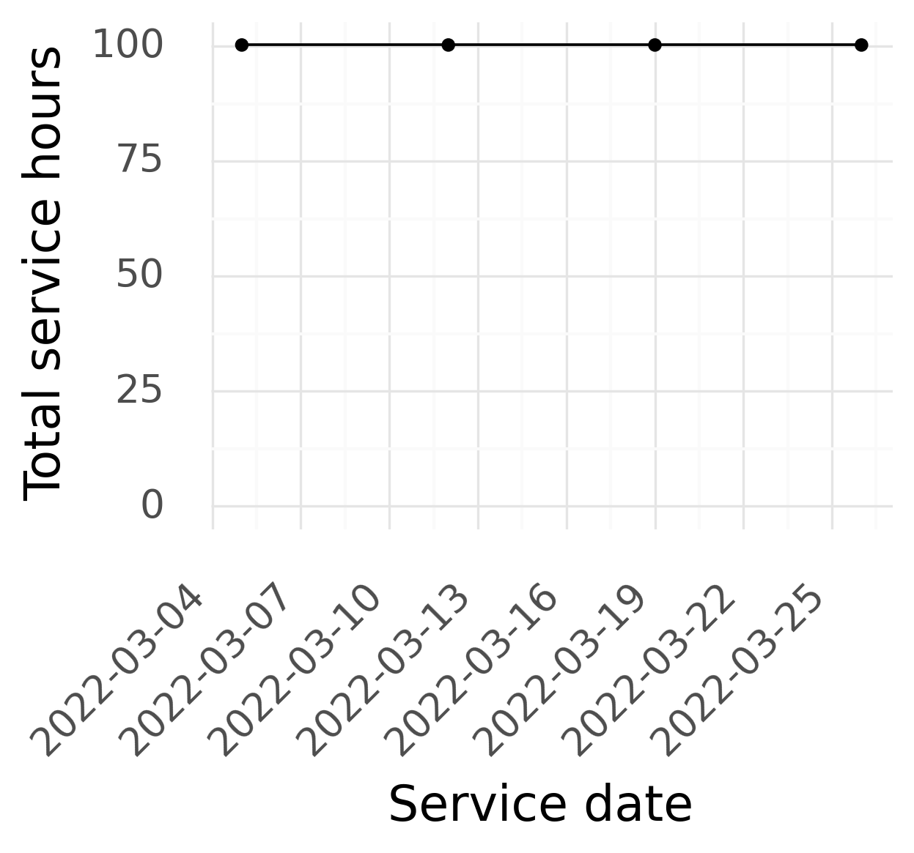
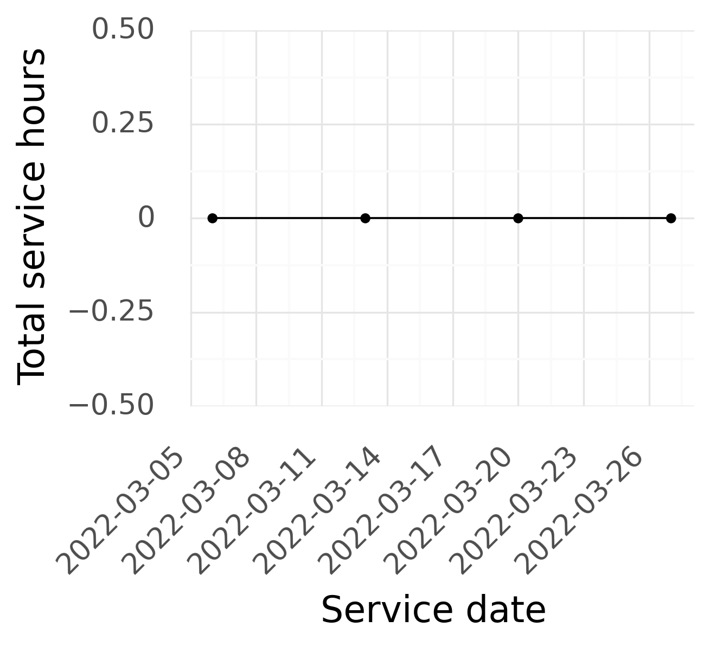
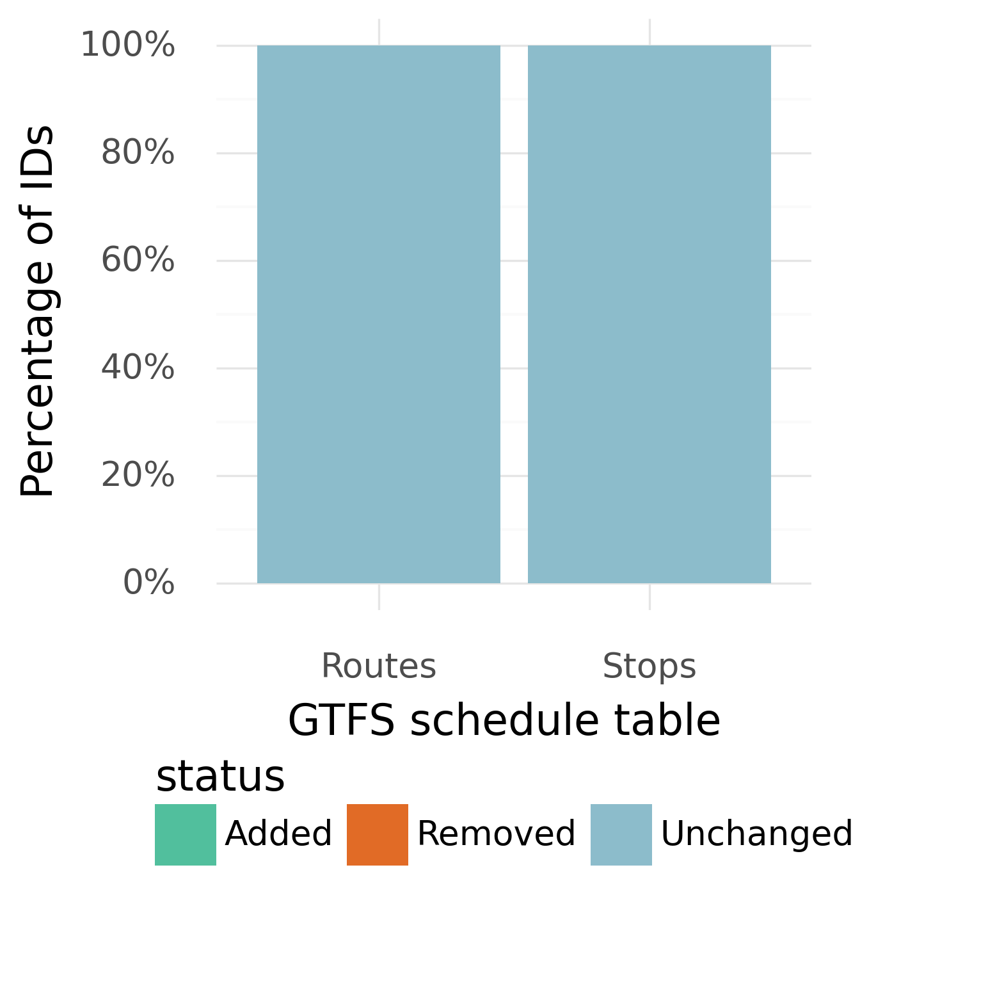

This is a monthly report, generated by the California Integrated Travel Project
(Cal-ITP), summarizing issues discovered by MobilityData’s GTFS Validator. This report
is available for viewing by the general public to support continuous improvement of
GTFS data and the experience of transit passengers.
Current GTFS Feed Info
12-31-2029
Feed End Date
4
Days With No Service
5
Routes
177
Stops
About the March Daily Service Level Charts
These charts show the total hours of transit service described by the active feed for each day.
Since service levels often vary by the day of the week, it is split into three charts for weekdays, Saturdays, and Sundays.
Flat lines indicate consistent levels of service throughout the month.
Short drops may indicate temporary reduced service, such as for holidays, gaps in feed publishing, or potential inaccuracies.
Please reach out to our help desk at hello@calitp.org with any questions.
Service hours per weekday in the active feed:

Service hours per Saturday in the active feed:

Service hours per Sunday in the active feed:

About the March Identifier Change Charts
These charts show the percentage of stop and route IDs that have changed since the previous month.
Stop and route IDs are important identifiers for GTFS feed consumers to correctly parse feeds.
It is a GTFS Best Practice to keep these consistent between feed versions whenever possible.
More than 5% being new or dropped is a cause for attention, especially if there hasn't been a major service or route change.
Please reach out to our help desk at hello@calitp.org with any questions.
Changes from March 01 to March 31

Consistency with the California GTFS Minimum Guidelines
Do the following files/fields exist?
2022-03-06
2022-03-20
Visual display
shapes.txt
Navigation
levels.txt
pathways.txt
Fares
fare_leg_rules.txt
fare_rules.txt
Technical contacts
feed_info.txt
Validation errors observed
Error Name
Error Description
Severity
decreasing_or_equal_stop_time_distance
Two consecutive stop times in a trip should have increasing distance. If the values are equal, this is considered as an error.
ERROR
route_short_and_long_name_equal
Short and long name should not be identical.
WARNING
Cal-ITP validation errors observed
Number of errors
Error Name
Error Description
2022-03-06
2022-03-20
decreasing_or_equal_stop_time_distance
Two consecutive stop times in a trip should have increasing distance. If the values are equal, this is considered as an error.